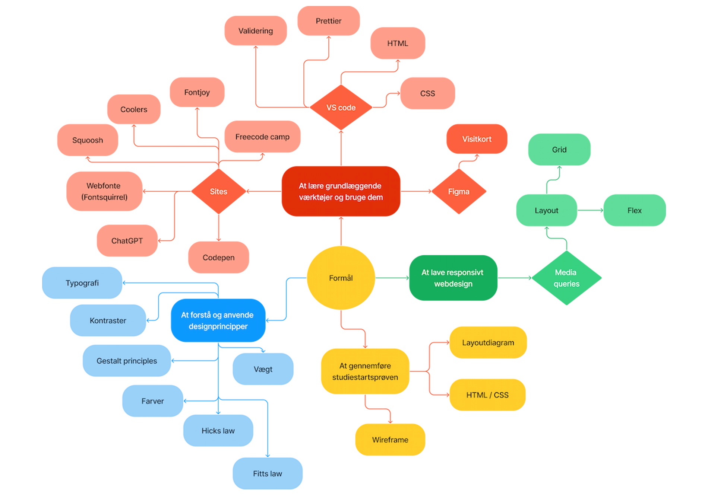

Tema 02
Web
01. Hovedtemaer

- Responsivt webdesign
- Websideopsætning
- Hands-on færdigheder i designværktøjer
02. Formål

×
I dette tema var formålet at få grundlæggende færdigheder i brugen af
redskaber som VS Code
og Figma. Derudover var det et mål at forstå faglige begreber og designprincipper.
03. Proces


Grundlæggende HTML og CSS-træning :
I begyndelsen fokuserede jeg på at opbygge grundlæggende færdigheder i HTML
og CSS. Dette omfattede CSS boxmodellen og stylingmetoder som farvevalg og web fonte.
Grid og Flex : Jeg udvidede mine layout-færdigheder ved at studere grid- og flex- i CSS. Disse værktøjer var nøglen til at skabe responsivt design.
Wireframes og Layoutdiagrammer : Under udarbejdelsen af studiestartsprøven anvendte jeg wireframes og layoutdiagrammer som værktøjer til at strukturere min kode effektivt.
Grid og Flex : Jeg udvidede mine layout-færdigheder ved at studere grid- og flex- i CSS. Disse værktøjer var nøglen til at skabe responsivt design.
Wireframes og Layoutdiagrammer : Under udarbejdelsen af studiestartsprøven anvendte jeg wireframes og layoutdiagrammer som værktøjer til at strukturere min kode effektivt.
Læring af nye kode :
I processen med at udforske grid-systemet dykkede jeg ned i avancerede funktioner som 'order' og
'last child'.
Responsivt Design og Media queries : Arbejdet med studiestartsprøven gav mig en dybere forståelse af media queries.
Responsivt Design og Media queries : Arbejdet med studiestartsprøven gav mig en dybere forståelse af media queries.
04. Produkt


Jeg fuldførte studiestartsprøven ved at skabe et website, der anvender
forskellige
grid- og
flex-layouts og samtidig er responsiv. At skabe et website med varierende layout viste sig at
være
en betydelig udfordring. Jeg stod over for komplekse problemer undervejs, men disse udfordringer
bidrog til min dybere forståelse af websites struktur. Specielt fik jeg en øget
indsigt i anvendelsen af media queries, grid og flex i webudvikling.
Denne erfaring har været afgørende for min dygtiggørelse, idet den tillod mig at lære mere
omkring
de underliggende principper i opbygningen af websites. Især har arbejdet med responsivitet og de
nævnte
layoutteknologier som grid og flex givet mig en forståelse for, hvordan man skaber en dynamisk
og
tilpasningsdygtig webside.